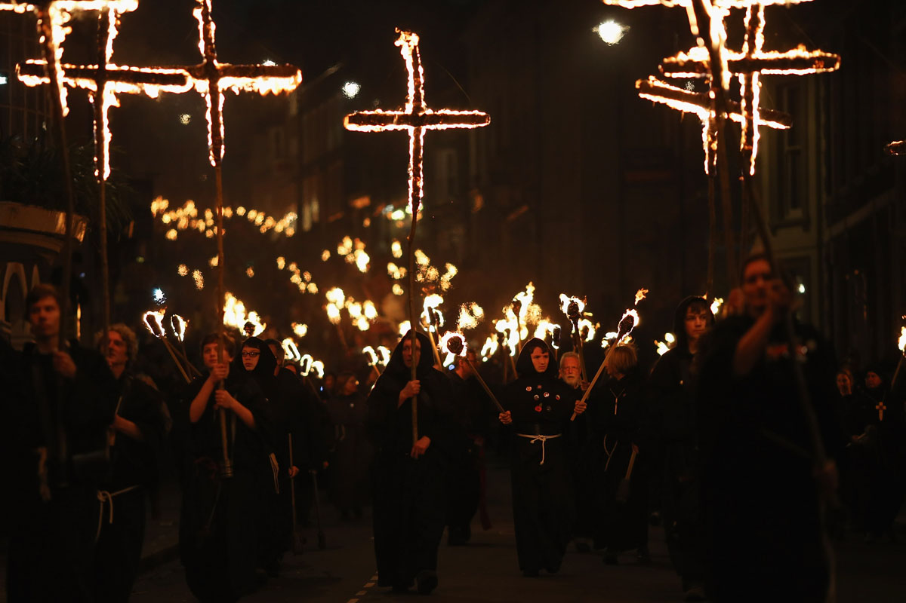

Từ Lễ Hội Samhain Cổ Đại...
Halloween có nguồn gốc từ lễ hội Samhain (phát âm là "sah-win") của người Celt cổ đại, một dân tộc sống cách đây hơn 2.000 năm ở vùng đất mà ngày nay là Ireland, Vương quốc Anh và miền bắc nước Pháp. Họ kỷ niệm năm mới vào ngày 1 tháng 11.
Ngày này đánh dấu sự kết thúc của mùa hè và vụ thu hoạch, đồng thời là sự khởi đầu của mùa đông tăm tối, lạnh lẽo - một thời điểm trong năm thường gắn liền với cái chết. Người Celt tin rằng vào đêm trước năm mới (31/10), ranh giới giữa thế giới của người sống và người chết trở nên mờ nhạt. Họ tin rằng các linh hồn của người chết sẽ trở lại trái đất.
...Đến Ngày Lễ Toàn Cầu

Khi Thiên chúa giáo lan rộng, lễ hội Samhain dần được thay thế bằng ngày lễ Các Thánh (All Saints' Day) vào ngày 1/11. Buổi tối trước đó được gọi là "All Hallows' Eve" (Đêm Vọng Lễ Các Thánh), và dần dần được gọi tắt là "Halloween".
Khi người Ireland và Scotland nhập cư vào Mỹ vào thế kỷ 19, họ đã mang theo những phong tục này. Từ đó, Halloween dần biến đổi, kết hợp thêm nhiều truyền thống khác nhau và trở thành một ngày lễ thế tục, tập trung vào các hoạt động như "trick-or-treat", hóa trang, trang trí nhà cửa và khắc bí ngô.
Một số hình ảnh lễ hội Halloween ở các quốc gia khác

tham khảo từ https://dep.com.vn/